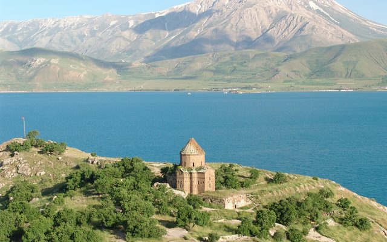

Şelale


Kanyon


Göl
 Abant Gölü Tabiat ParkıBolu
Abant Gölü Tabiat ParkıBolu Bafa Gölü Tabiat ParkıMuğla
Bafa Gölü Tabiat ParkıMuğla Beyşehir Gölü Milli ParkıKonya
Beyşehir Gölü Milli ParkıKonya Eğirdir GölüIsparta
Eğirdir GölüIsparta Gölcük Krater Gölü Tabiat ParkıIsparta
Gölcük Krater Gölü Tabiat ParkıIsparta Hazar GölüElâzığ
Hazar GölüElâzığ Karagöl (Borçka)Artvin
Karagöl (Borçka)Artvin Köyceğiz GölüMuğla
Köyceğiz GölüMuğla Meke GölüKonya
Meke GölüKonya Nemrut Krater GölüBitlis
Nemrut Krater GölüBitlis Salda GölüBurdur
Salda GölüBurdur Sapanca GölüSakarya
Sapanca GölüSakarya Tuz GölüAksaray
Tuz GölüAksaray UzungölTrabzon
UzungölTrabzon
Van GölüVan Yedigöller Milli ParkıBolu
Yedigöller Milli ParkıBolu Çıldır GölüArdahan
Çıldır GölüArdahan